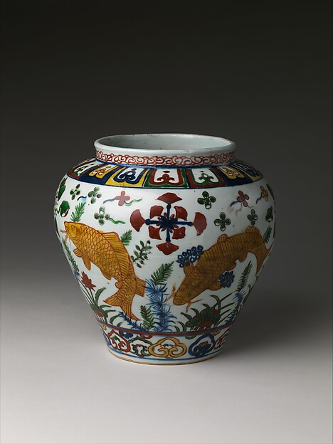

明代茶道完成了一次深刻变革——从宋代繁复的点茶法转为散茶瀹泡法。这一转变不仅改变了饮茶方式，更重塑了整个茶具体系：茶壶取代茶瓶成为核心器皿，紫砂壶在宜兴诞生并被文人赋予极高的审美价值。

1391年，明太祖朱元璋下诏废团茶、改贡散茶。这一行政命令直接终结了延续数百年的龙团凤饼传统，全国改饮散茶。茶具体系随之巨变：茶碾、茶臼、茶罗等点茶工具迅速退出历史舞台。
散茶直接投入壶中，沸水冲泡。不需碾磨、不需击拂。茶壶的器型设计从此围绕出水流畅度、断水利落度和执握舒适度展开。明代茶壶多为瓷质，早期以永乐甜白釉壶、宣德青花壶为代表。
正德至嘉靖年间，宜兴金沙寺僧和供春首创紫砂壶。紫砂泥料双气孔结构使其具有良好的透气性和保温性，"不夺茶香，又无熟汤气"。此后时大彬、李仲芳、徐友泉等名家辈出，紫砂壶从日用器升格为文人雅玩。
瀹茶法每次冲泡少量茶汤，分杯品饮。茶杯因此趋于小巧——口径3~5cm的小杯成为主流。永乐压手杯、成化斗彩鸡缸杯是明代茶杯的经典器型。杯身低矮、撇口，便于观赏汤色和闻香。
许次纾《茶疏》、张源《茶录》、罗廪《茶解》等明代茶书的涌现，标志着中国茶道理论体系的成熟。茶具不再是单纯的饮器，而被赋予了"器以载道"的哲学意味。茶壶、茶杯、茶洗、茶巾等一整套器具的组合成为文人书斋的标配。
宋代点茶所用的建盏、茶筅、茶碾在明代几乎消失殆尽。取而代之的是小巧精致的白瓷茶杯和紫砂壶。这一转变仅用了不到五十年——行政力量与饮茶风尚的合力，创造了一套全新的茶具美学和饮茶仪式，其影响延续至今。